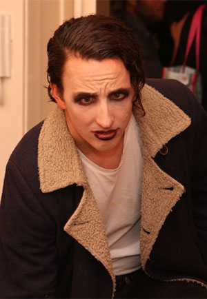

|

|
Molnár Balázs Nándor 28 Budapest Szociálpszichológus, korábban kutatóként dolgozott Hobbik:multimédiás tartalmakkal ismerkedés, tradicionális íjászat, főzés, (vad)kempingezés, túrázás Kedvenc film: Man from Earth, Ghost in the Shell |
"Egy olyan karriert szeretnék, amiben mindig lehet fejlődni, mobilitást és kedvező megélhetést ad, és amiben benne van a problémamegoldás sikerélménye."